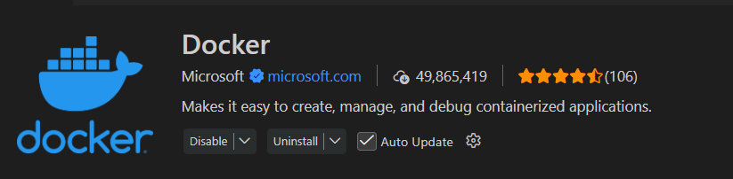
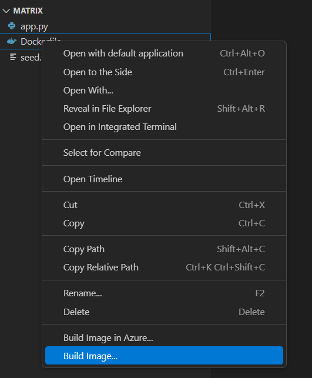
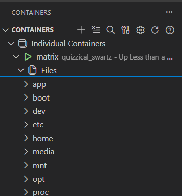
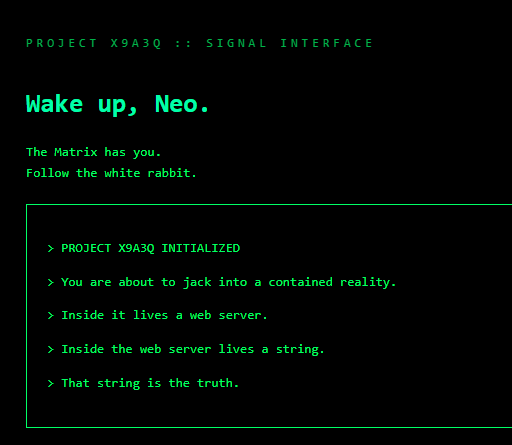
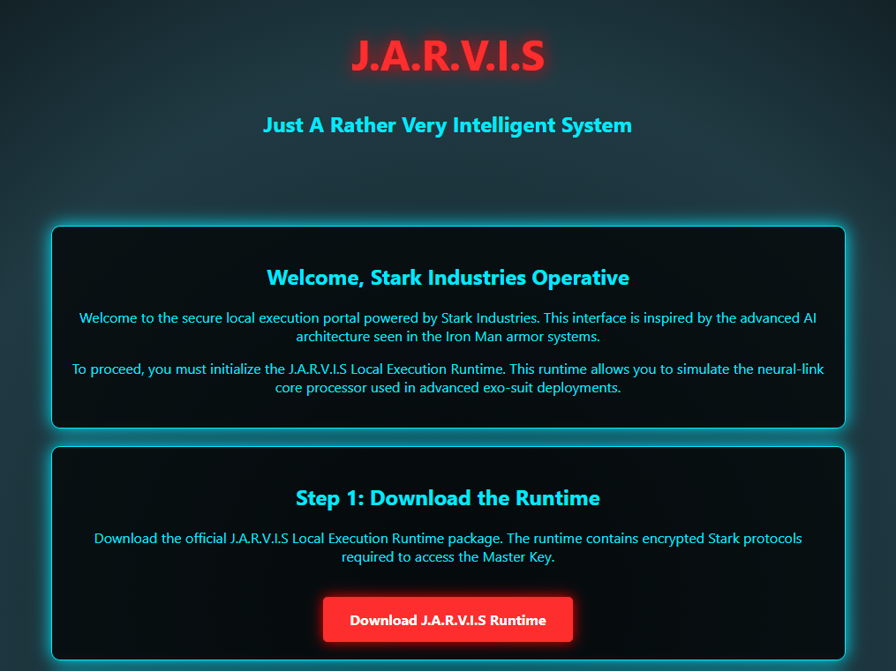

<!-- .slide: data-state="front hide-controls" --> <div id="title">Lab on Docker</div> <div id="subtitle">Data Privacy and Security</div> <div id="date">Data Science and Management (DASMA)</div> --- ## Docker baseline <div class="content-center"> **Docker** is a container platform that allows developers to package applications and their dependencies into lightweight, portable environments that can run consistently across different systems. <br/> </div> --- ## Main Docker concepts <div class="content-center"> <div class="fragment" data-fragment-index="1"> - **Docker Image**: A read-only template with instructions for creating a container (like a recipe) - **Docker Container**: A running instance of an image (like the dish) - **Dockerfile**: A text file with instructions to build an image - **Docker Hub**: A public registry for sharing images <br/> </div> </div> --- ## How Docker Works <div class="content-center"> <div class="cell-center"> <img src="../N01/img/docker-basics-of-docker-system.png" style="width: 80%;"> </div> <br/> <div class="fragment" data-fragment-index="0"> 1. A **Dockerfile** describes how to build an image 2. `docker build` creates the image from the Dockerfile 3. `docker push` uploads the image to a **registry** (e.g., Docker Hub) 4. On another machine: `docker pull` downloads the image 5. `docker run` starts a container from the image </div> </div> --- ## Copying Files: `docker cp` <div class="content-center"> <div class="fragment" data-fragment-index="1"> `docker cp` copies files between the host and a container: ```bash # Copy a file FROM the container TO the host docker cp my-web:/etc/nginx/nginx.conf ./nginx.conf # Copy a file FROM the host TO the container docker cp ./index.html my-web:/usr/share/nginx/html/ ``` <br/> </div> <div class="fragment" data-fragment-index="2"> This is useful for: - Extracting logs, data, or configuration files from a container - Injecting configuration or data files into a running container - Debugging: inspecting files inside a container without `exec` </div> </div> --- ## Docker and VSCode <div class="content-center"> The official Docker extension for VS Code makes very easy to handle containers <p></p> </div> --- ## Docker and VSCode <div class="content-center"> <div class="fragment" data-fragment-index="1"> Building and image could be simple as clicking a button <br /> <p></p> </div> </div> --- ## Docker and VSCode <div class="content-center"> Browsing the container filesystem is also very user friendly. <br /> <p></p> </div> --- <!-- .slide: data-state="break-blue hide-controls" --> # Project X9A3Q <div class="content-center"> Docker Challenge 01 </div> --- ## Project X9A3Q - Reconnaissance <div class="content-center"> <div class="cell-center"> <p></p> </div> <br/> What can we observe? The challenge... - let you download a ZIP file; - require you to build a docker container and take a message; </div> --- ## Project X9A3Q - Hypothesis <div class="content-center"> <div class="fragment" data-fragment-index="1"> The student can act iin two possible ways: </div> <div class="fragment" data-fragment-index="2"> 1. Analyze the container data and understand which and where is the message </div> <div class="fragment" data-fragment-index="3"> 2. Take the Red pill, go down the rabbit hole and get the message </div> <div class="fragment" data-fragment-index="4"> <div class="alert alert-hint">The fastest way is probably a combination of both</div> </div> </div> --- ## Project X9A3Q - Exploitation <div class="content-center"> 1. **Download the challenge file** from the website. <br> 2. **Read the files** to understand the URL to generate the message. <br> 3. **Run the container** and generate the message. <br> 4. **Find the message** reading the source code and understanding where it is saved. <br/> <br/> </div> --- <!-- .slide: data-state="break-blue hide-controls" --> # Project Jarvis <div class="content-center"> Docker Challenge 02 </div> --- ## Project Jarvis - Reconnaissance <div class="content-center"> <div class="cell-center"> <p></p> </div> <br/> What can we observe? - A system to download the runtime of a local AI. - You need to obtain the "master" key of the system. </div> --- ## Project Jarvis - Hypothesis <div class="content-center"> <div class="fragment" data-fragment-index="1"> This challenge is about showing the students how easy it is to run a complex infrastructure on your local computer via Docker Compose </div> <div class="fragment" data-fragment-index="2"> Read the `docker-compose.yml` file to understand how many containers will be created </div> <div class="fragment" data-fragment-index="3"> <div class="alert alert-hint">Just run the pipeline</div> </div> </div>